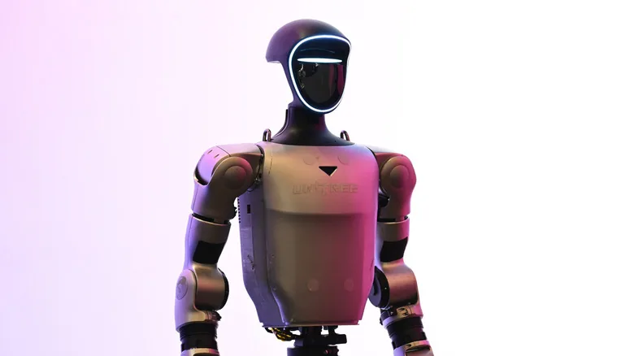

The China Humanoid Supply Chain: A Complete Guide
The pillar guide behind the export machine.
Every credible estimate puts China at the top of the humanoid market — over 84% of 2025 global shipments by Omdia, 97% in H1 2026 by Smart Analytics Global. AgiBot alone shipped about 8,400 units, or 44% of the world total. And the export machine is only accelerating: humanoid robot exports rose 210% year-on-year in Q1 2026.

In August 2026, US-based researcher Smart Analytics Global put a number on something the industry already felt: Chinese vendors shipped 97% of the world's humanoid robots in the first half of 2026. Shanghai's AgiBot shipped about 8,400 units — 44% of the global total. Hangzhou's Unitree Robotics shipped about 5,900 — 31%. Other research firms, using different measures, still place Chinese firms on top: Omdia counted ~13,000 humanoid units globally in 2025 with China holding 84%+, and the top five mass-production vendors were all Chinese.
| Vendor | AgiBot (智元) | Unitree (宇树) | UBTECH (优必选) | Leju (乐聚) | EngineAI |
|---|---|---|---|---|---|
| 2025 shipments | 5,100–8,400* | 4,200–5,900* | ~1,000 | Top-5 | Top-5 |
| Global share | ~39–44% | ~31–32% | ~8% | — | — |
| Overseas revenue | Target 30%+ | ~44% (2025) | ~23.7% (RMB 475M) | 10k+ EU orders | — |
| HQ | Shanghai | Hangzhou | Shenzhen | Suzhou | Shenzhen |
*Range reflects self-reported vs. Omdia figures; market-share estimates vary by methodology. AgiBot first overtook Unitree in H1 2026.
Unitree is the purest export story so far: 2025 revenue of RMB 1.71B with ~44% from overseas; its quadruped robots hold 60-70% of the global market with 30,000+ cumulative units across more than half the world's countries. Its IPO (688836.SH) priced in August 2026 to raise RMB 6.1B — the sector's first big public-market stamp. AgiBot and Robotera are the most export-heavy by share (both ~50% of units overseas); UBTECH reported RMB 475M in overseas revenue (23.7%) and signed a cooperation with Airbus this year; Leju signed 10,000+ European distribution orders with UK and Netherlands channels; DEEP Robotics runs ~18% overseas.
China's robot exporters are moving through a familiar sequence: (1) direct sales of units to global hobbyists, researchers and integrators — the channel that built Unitree's quadruped business and just turbo-charged Hugging Face's Microduck duck (made in Shenzhen, sold worldwide); (2) distribution networks — Leju's European channel deals, UBTECH's Airbus partnership; and (3) local production — the first European humanoid mass-production line built by a Chinese vendor went live in 2026.
Reality check from the field (as one Chinese industry analysis put it this week): Unitree's quadruped business "collects real money" overseas while its humanoids are still "walking the runway" in Europe — signed distribution is not the same as delivered units. The export machine is real, but its humanoid stage is early.
The same flywheel that built China's consumer-electronics export empire now runs for robots: the world's densest component supply chain (motors, reducers, encoders, sensors — all profiled in our humanoid supply chain guide), low manufacturing cost, and hardware iteration speed measured in months, not years. When a $399 duck from Hugging Face needs a factory that can ship 10,000 units in a week, that factory is in Shenzhen — by Seeed Studio. The hardware era of embodied AI is being exported from China first.
Chinese vendors accounted for over 84% of 2025 global humanoid shipments (Omdia), and 97% in H1 2026 (Smart Analytics Global) — AgiBot shipped about 8,400 units (44%) and Unitree about 5,900 (31%).
Unitree leads with 44% overseas revenue share (2025, revenue RMB 1.71B); UBTECH reported RMB 475M overseas (23.7%); AgiBot targets 30%+ overseas. By export share, AgiBot and Robotera both reach about 50%.
Of Chinese humanoid robots sold abroad (~30% of 2025 shipments), North America takes 30%, Europe 25%, the Middle East 20%, East Asia 18% and Southeast Asia 7%.
China combines the world's densest component supply chain (motors, reducers, sensors), low manufacturing cost, and fast hardware iteration — the same flywheel that built its consumer electronics export machine, now applied to embodied AI.
The pillar guide behind the export machine.
A $2.6M day for a Shenzhen-made open-source robot.
The $12B muscle market inside every exported robot.
The quadruped category Unitree already dominates globally.
Company profiles, product pages and supplier analysis for China's robotics ecosystem.